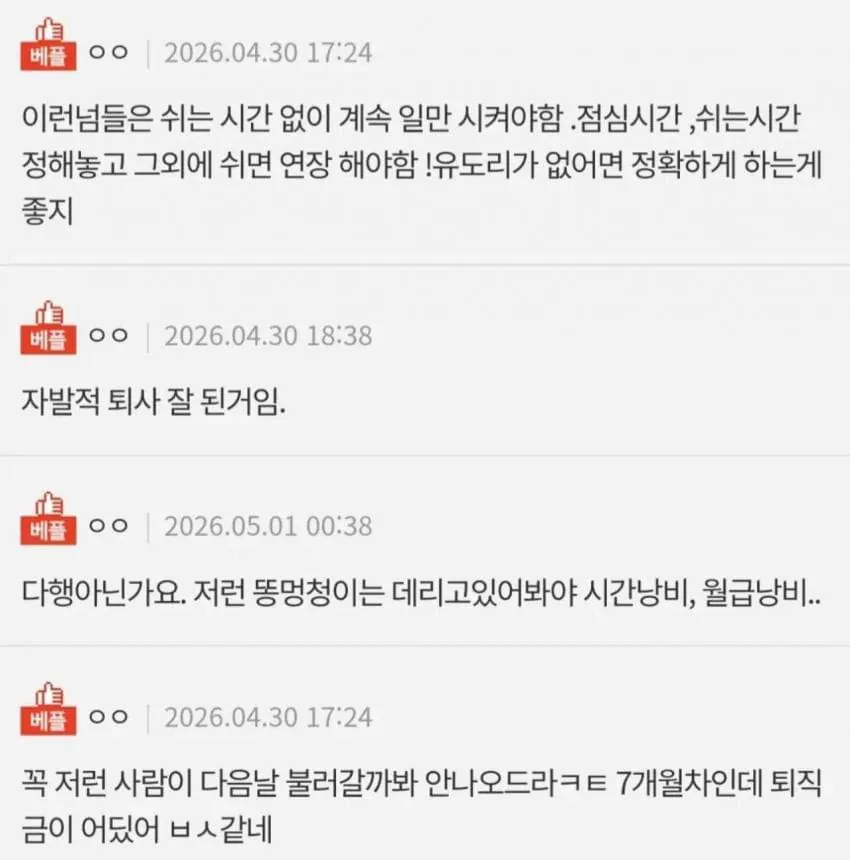

84 · 9 · 1 시간 전 · 원문

수집 당시 댓글 9개
상이프로 · 1 시간 전
그래도 저런 자연산 똥멍청이들이 기입나갈때 조용히 나가면 정말 편합니다.
121hp · 1 시간 전
어떻게 해야 저런 사고방식의 결론이 나오지?
금마리 · 1 시간 전
구라지 저럼 버러지새끼가 있을리 없음
던킨제로자두 · 1 시간 전
분위기 싸해지기만하는 무가치한 주작
에쿠어스 · 1 시간 전
저런 똘게이가 존재하는 ㅋㅋ
주관적인요정 · 1 시간 전
기본 산수도 안되는 사람을 갖다 썼는데 알아서 나갔으니 얼마나 좋아
하레군 · 1 시간 전
저런 븅신이 알아서 나가주면 감사할일
liognvnei · 1 시간 전
구라지??
콩콩이콩 · 56 분 전
주작임


그래도 저런 자연산 똥멍청이들이 기입나갈때 조용히 나가면 정말 편합니다.